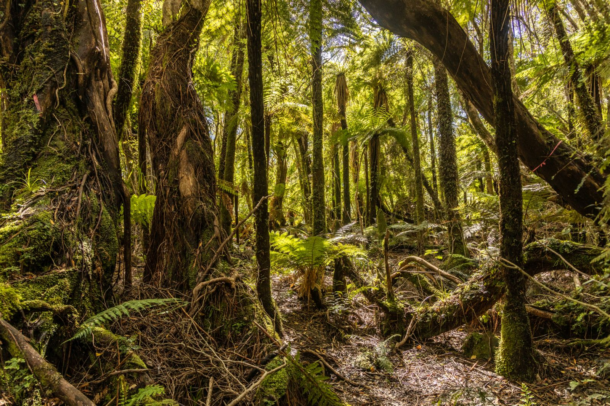
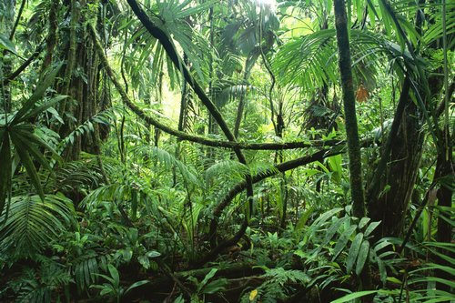
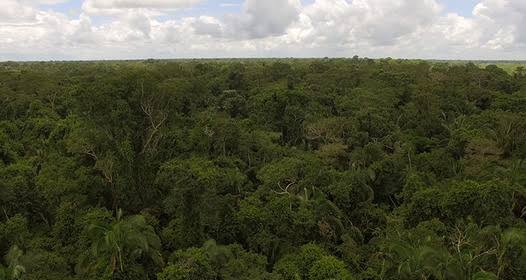
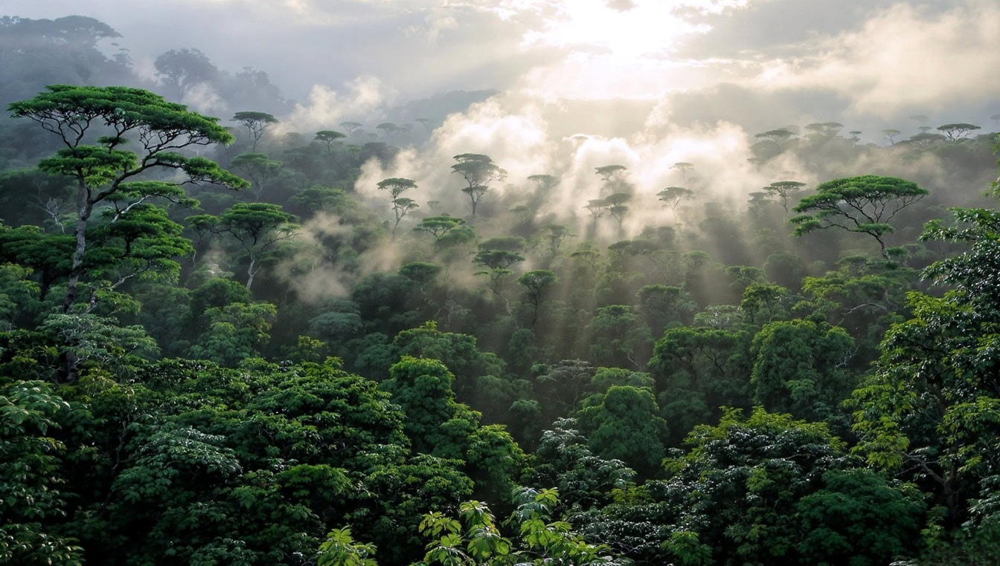
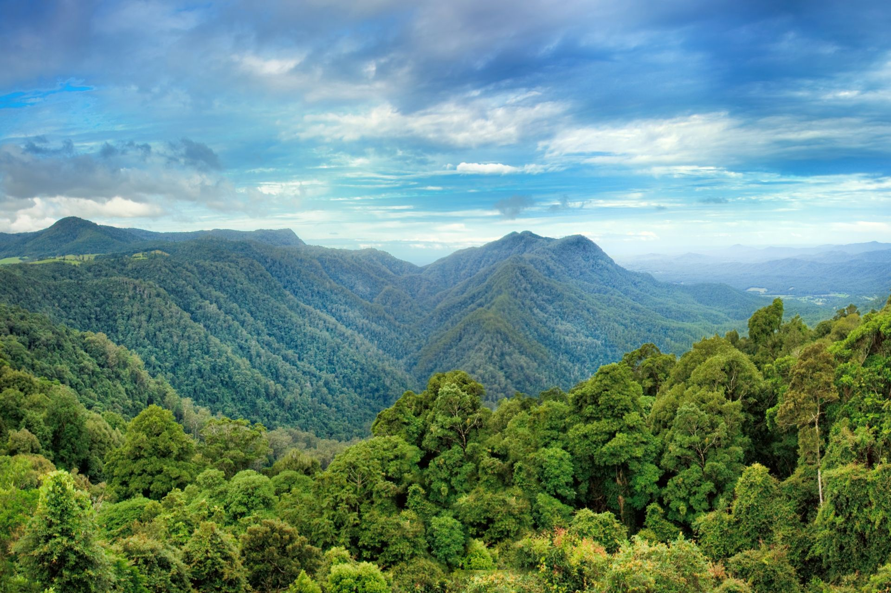

Egy erdő. Négy külön világ.
Az esőerdő nem csupán fák sokasága: egymásra épülő élőhelyek rendszere. Felfelé haladva változik a fény, a páratartalom és a szél, velük együtt az élővilág is.
A magasságok közelítő értékek, a szintek határai nem élesek.

Az avar nem hulladék, hanem az erdő tápanyag-körforgásának része.
01 – Ahol minden újrakezdődik
Erdőtalaj
A lehullott levelek alatt szüntelen munka folyik. A meleg, párás környezetben gombák, baktériumok és apró állatok bontják le az avart, így a tápanyagok gyorsan visszakerülnek az élő körforgásba.
Fény: nagyon kevés, állandó árnyék
Növényvilág
Mohák, páfrányok és facsemeték. A gombák nem növények, de kulcsszerepük van a lebontásban.
Állatvilág
Hangyák, termeszek és ezerlábúak; a nagyobb lakók között tapírok és jaguárok is járnak itt.
Tudtad? A buja növényzet nem feltétlenül jelent gazdag talajt: a tápanyagok nagy része az élő növényzetben található.
02 – Alkalmazkodás az árnyékhoz
Aljnövényzet
Egy lombtető alatt a fény ritka kincs. A cserjék és fiatal fák nagy, vékony levelekkel fogják fel a szórt napfényt. A levegő párás, a szél gyenge; egy kidőlt fa nyomán nyíló fényrés új növekedést indíthat el.
Fény: kevés, szórt fény
Növényvilág
Pálmák, árnyéktűrő cserjék, páfrányok és fiatal fák; sokuk hosszú ideig vár egy fényrésre.
Állatvilág
Levelibékák, kígyók és rovarok. Sok faj rejtőszínnel olvad bele a levelek világába.
Tudtad? A levelek hegyes „cseppcsúcsa” segíti az esővíz lefolyását, így a levél felülete hamarabb megszárad.

A piros szemű levélbéka nappal a levelek alján pihen.

A termést fogyasztó tukánok a magok terjesztésében is segítenek.
03 – Az erdő lüktető központja
Lombkoronaszint
Az egymásba érő fakoronák zöld tetőt alkotnak. Itt már bőségesebb a napfény, és rengeteg virág, termés meg búvóhely várja az állatokat. Liánok kötik össze az ágakat, más növények pedig a fákon telepednek meg.
Fény: sok, kívül napos, belül árnyas
Növényvilág
Örökzöld lombos fák, liánok, orchideák és broméliák. A fán lakó növények többsége nem élősködő.
Állatvilág
Tukánok, bőgőmajmok, lajhárok és számtalan rovar. Sok állat ritkán ereszkedik a talajra.
Tudtad? A fán lakó broméliák levélrózsáiban összegyűlő víz apró élőhelyet teremt rovaroknak és más kis állatoknak.
04 – Óriások a lombtető fölött
Emergens szint
Néhány hatalmas fa a zárt lombkorona fölé emelkedik. Koronájukat közvetlen napsütés, erős szél és nagyobb hőingás éri. Ezek a kiemelkedő fák az erdő messziről látható őrszemei.
Fény: közvetlen napsütés
Növényvilág
Kiemelkedő óriásfák, például kapokfák. Hatalmas törzsüket gyakran támasztógyökerek stabilizálják.
Állatvilág
Hárpiák, arapapagájok és denevérek használják a magas fákat fészkelésre, pihenésre vagy tájékozódásra.
Tudtad? A legmagasabb fák az itt jelzett tartománynál is magasabbra nőhetnek. Nincs minden esőerdőre érvényes felső határ.

A lombtengerből kiemelkedő fák több fényt és szelet kapnak.
Más magasság, más élet.
Felfelé egyre több fény, de minden szint nélkülözhetetlen az egészhez.
| Az erdő szintje | Közelítő magasság | Fényviszonyok | Jellegzetes élővilág |
|---|---|---|---|
| Erdőtalaj | A talaj felszíne | Nagyon kevés, mély árnyék | Lebontók, mohák, facsemeték; hangyák, tapírok |
| Aljnövényzet | Kb. 0–10 m | Kevés, szórt fény | Nagy levelű cserjék, pálmák; békák, kígyók |
| Lombkoronaszint | Gyakran 20–40 m | Sok fény, mozaikos árnyék | Liánok, orchideák; tukánok, majmok, lajhárok |
| Emergens szint | Akár 40–60+ m | Közvetlen, erős napsütés | Kiemelkedő óriásfák; hárpiák, arapapagájok |
Nem négy külön erdő, hanem egy összefüggő rendszer.
A lehulló levelek tápanyagot adnak a talajnak; a gyökerek vizet vesznek fel, az állatok magokat és virágport szállítanak a szintek között.

Az egész erdőt kell védenünk, a talajtól a legfelső ágig.
Ha egy szint sérül, az egész erdő megérzi.
Az erdőirtás és a feldarabolódás megszakítja az élőhelyek kapcsolatait. A felmelegedés, az aszályok és a tüzek tovább növelik a terhelést. A védelem ezért nem állhat meg egyetlen fánál vagy fajnál.
- Válassz felelősebben. Fa- és papírtermékeknél keress hiteles minősítést, például FSC-t.
- Támogasd az erdők őrzőit. Segíts természetvédelmi programokat és az őslakos közösségek munkáját.
- Add tovább, amit megtudtál. Beszélj az esőerdők szerepéről, és támogasd a védelmüket szolgáló döntéseket.
Még mélyebbre az erdőben
További ismeretek az esőerdők felépítéséről és védelméről.
Az esőerdők ökológiája
Az esőerdők védelme
Erdők és természetvédelem